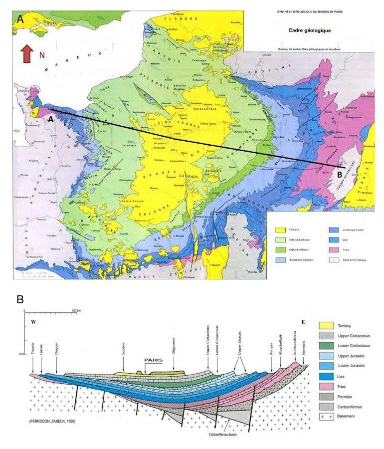

GSI: Séminaire Nord-Bassin-Parisien
[GSI] Séminaire Nord-Bassin-Parisien: Structures géométriques de la dissipation
Structures géométriques de la dissipation et plus généralement structures géométriques de l'information.
To subscribe to announcement and register your participation to online meetings, kindly send an email to
frederic.barbaresco@thalesgroup.com
Talks are scheduled at 10am Paris time.
Forthcoming talks
- 2024/05/13: Vu Ngoc San
- 2024/05/27: Jérémie Pierard de Maujouy
- 2024/06/3: Eliot Tron
- 2024/06/10: Emmanuel Gnandi
Past talks
History
- Séminaire Sud-Rhodanien de Géométrie
-
Vous connaissiez le séminaire Sud-Rhodanien de Géométrie,
mais connaissez-vous le tout jeune SEMINAIRE NORD-BASSIN-PARISIEN SUR LES STRUCTURES GEOMETRIQUES DE LA DISSIPATION entre Paris-Metz-Valenciennes-Lille-Louvain-Liège-Bruxelles ? D'esprit ouvert, il accueille aussi des membres Sud-Rhodaniens., mais connaissez-vous le tout jeune SEMINAIRE NORD-BASSIN-PARISIEN SUR LES STRUCTURES GEOMETRIQUES DE LA DISSIPATION entre Paris-Metz-Valenciennes-Lille-Louvain-Liège-Bruxelles ? D'esprit ouvert, il accueille aussi des membres Sud-Rhodaniens.
Le Bassin Parisien est un bassin sédimentaire en forme d'amphithéâtre incliné du Sud-Est vers le Nord-Ouest où se sont accumulés des roches sédimentaires d'origine marine et continentale datant du Mésozoïque et du Cénozoïque entre 245 et 1.8 millions d'années.

Last updated by Frank Nielsen, April 2024